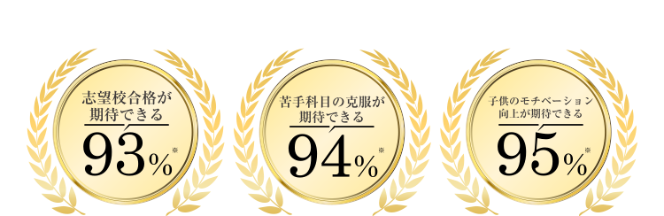
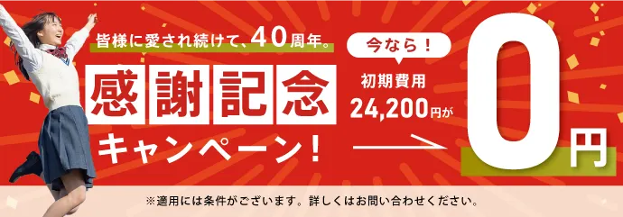
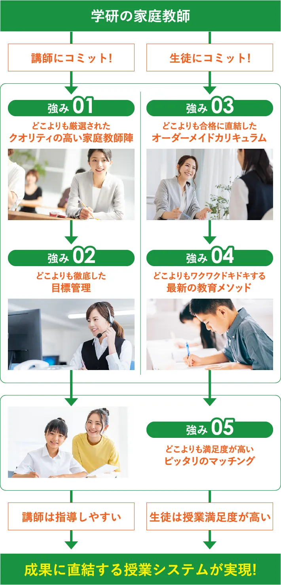

行きたいところに行こう。
家庭教師で選ぶなら学研。
「学研にしてよかった!」という声、
おかげさまで、いま、増えています。
※実施委託先：日本ビジネスリサーチ/調査期間：2023年2月22日～2月23日/調査方法：サービス情報を閲覧した上でのWEB上イメージ調査
調査対象：家庭教師サービスに興味があり塾または家庭教師サービスを利用したことがあるお子様をお持ちの保護者の方 331名
はじめるなら今がお得!

資料請求までわずか1分!
資料請求・体験指導のお問い合わせ（無料）生徒・保護者様の声
「学研にしてよかった！」という声、
おかげさまで、いま、増えています。
- 小学生
- 中学生
- 高校生
※画像はイメージです
中高生のみなさん、こんなお悩み、抱えていませんか?
成績アップしたいけど
勉強が苦手…
塾に通っているけど
結果が出ない…
勉強と部活の
両立が難しい…
受験に向けて
どこからはじめたらいいか
分からない…
何とかしたい。
このままだとヤバい。
そうは思うけど、
「どうしたらいいか分からない」
と、悩んでいる方も多いはず。
それもそのはず、
一人でできることには、
限界がありますよね。
その悩み、
学研の家庭教師が解決します!
家庭教師で選ぶなら学研。
「学研にしてよかった！」という声、
おかげさまで、いま、増えています。
悩みを解決する
学研の家庭教師の5つの強み
家庭教師なんてどこも同じなんて思っていませんか？
いえいえ、学研だからこそできる強みがあります。
どこよりも厳選された家庭教師陣
採用率約8%の狭き門を突破した、
学研式だからできる自慢の家庭教師陣
適性検査や面接などで「指導力・人物ともに合格」と
判断された8％の人材のみを採用しています。
お子様をしっかりと受け持つ責任感が強い
自慢の講師陣です。
どこよりも徹底した目標管理
目標がスムーズに達成できるよう
専任スタッフがしっかりサポート
学研の家庭教師では、講師に指導報告を義務付けています。
専任の教務スタッフが、お子様の理解度、
テストの結果などを分析し、生徒さんにピッタリ合った
学習カリキュラムの見直しを随時行います。
目標達成までの学習管理を綿密に行うことで、
先生が成績をのばすことにしっかり専念できるので、
お子様の学力もしっかりと向上します。
どこよりも合格に直結したオーダーメイドカリキュラム
膨大な情報データをもとに
一人ひとりに合った個別カリキュラムを作成
「学研の家庭教師」は70年を超える歴史の学研グループの中で
1983年に創業した業界のパイオニア。
これまで10万人を超える指導実績があります。
「学研×家庭教師」だからこそ可能な教育システムによって、
受験校合格や成績向上を目標にした、
一人ひとりに合った効率的な学習カリキュラムを
作成いたします。
どこよりもワクワクドキドキする最新の教育メソッド
勉強が苦手なお子様でも
考える力がメキメキ伸びる
学研の家庭教師は、
学研ならではの教育メソッドが盛りだくさん。
お子様1人ひとりの性格に合った方法で、
勉強が楽しいと思えるような、
わくわくドキドキできる指導を心がけています。
「勉強が楽しい!」「いつの間にか成績が伸びていた」という、
学研ならではの体験をしていただいています。
どこよりも満足度が高いピッタリのマッチング
スケールメリットを生かして、
お子様にピッタリの講師をご紹介
学研の家庭教師は、全国規模ならではの安心感と
スケールメリットが強みです。
「ただ家庭教師を紹介する」ではなく、
一緒に目標に向かって頑張っていける先生、
尊敬しながらも安心できる先生をマッチング。
その結果、「家庭」「講師」の双方から好評を得ており、
98%の会員様に満足していただけます。
「なぜ成績が上がるの?」
「なぜ目標が達成できるの?」
その秘密は、
学研の家庭教師ならではの5つの強み!

さあ、次はあなたも!
まずは、資料請求からはじめてみませんか?
資料請求までわずか1分!
資料請求・体験指導のお問い合わせ（無料）コース・料金
目的・環境に合わせたコースを多数ご用意しています。
目的に合わせたカリキュラムの作成も可能ですので、
まずはお問い合わせください。
学研の家庭教師は、安心の『月謝制』。
高額教材のセット販売などもございません。
-
幼児コース
小学校入学前のお子様は個人で学力が違います。当コースでは年齢や学習レベルに合わせたオリジナルワークを使用し、お子様一人ひとりにあった学習指導をします。
1時間あたり 4,400円（税込）～
-
小学生コース
学研グループの強みを活かした中学受験対策、学校の補習、中学入学準備…。様々なご要望にベストフィットするカリキュラムをご提案いたします。私国立小在籍の方もお任せください。
1時間あたり 3,190円（税込）～
-
中学受験コース
お子様の現状やご家庭のご要望などをヒアリングさせていただき、お子様に合ったプランやカリキュラムをご提案いたします。中学受験生への指導経験がある講師が授業を担当します。
1時間あたり 4,290円（税込）～
-
中学生コース
「計画倒れ」にならないよう家庭教師がしっかりサポートしています。しっかりとした基礎固めから高校進学までスムーズにいくよう、各学校の進度に合わせた指導を行います。
1時間あたり 3,520円（税込）～
-
高校生コース
大学入試一般・共通テスト対策、定期テスト対策..。進路面談や学習カウンセリングもできます。志望校合格のために各大学の対策はもちろん、苦手科目の克服にも集中的に指導を行います。
1時間あたり 4,730円（税込）～
-
プロ家庭教師コース
学生による家庭教師とは違い、本格的なプロの講師が指導いたします。志望する学校に合わせた専門の講師をご紹介。家庭教師のプロだからこそ安定した高いクオリティの指導が可能です。
1時間あたり 6,710円（税込）～
-
不登校コース
学研グループの長い経験と多くの実績を生かし、不登校のお子様一人一人に勉強だけでなくメンタル面や生活面のサポート。お子様や御両親の悩み相談にも親身にお応えしています。
1時間あたり 5,170円（税込）～
-
高卒認定コース
学研の家庭教師では、高卒認定試験合格を全力でサポートしています。実際の指導はもちろん、出願手順や試験科目免除のアドバイスなど、一人一人に合わせた合格へのお手伝いをします。
1時間あたり 4,730円（税込）～
満足度98%で初めての方も安心。
まずは、体験してみたいという方は、ぜひ体験指導をどうぞ!
体験指導まで
カンタン２STEP
カウンセリングと体験指導
（トータル所要時間：約60分）

お子様には学研の家庭教師の講師、または専属スタッフによる
カウンセリング（学習相談）と体験指導を受けていただきます。
まずは家庭教師の雰囲気を味わっていただき、お子様の反応を見てください。
※地域や指導内容により上記と異なる場合がございます。 詳細はお問い合わせください。
学研の家庭教師体験レッスンの
3つのポイント
- ❶お子様の現在の実力がわかります
- ❷お子様にぴったりの勉強方法が見つかります
- ❸今までの家庭教師との違いがわかります
ご入会を強くおすすめすることはありませんので、
ご安心ください。
対応地域を確認する
学研の家庭教師は、全国でご対応可能です。
お住まいの都道府県からお探しください。
- 対面授業/オンライン対応
- オンラインのみ対応
よくあるご質問
大切なお子様の勉強方法ですから不安なことも多いはずです。
その他、ご不明な点などございましたら、お気軽にお問い合わせください。
成績についてのご質問
ほんとうに成績は上がりますか？
学研の家庭教師は、教務部に対して毎月の報告を義務付けております。「指導報告書」「定期ミーティング」「個別ミーティング」のシステムにより、お子様の指導状況をチェックし、目標達成までの学習管理を教務部のバックアップにより綿密に行いますので自主学習の習慣と共に学力が向上していきます。
受験対策は大丈夫ですか？1対1だと競争心がなくなったりはしませんか？
弊社は、受験対策として模擬テストをおすすめしており、 夏期講習・冬期講習も一部教務センターにて実施しております。 偏差値や志望校到達率の把握や単元別の習熟度チェックから、テスト慣れ、 会場慣れに至るまで、受験生のサポートはお任せください。
家庭教師についてのご質問
家庭教師は、アルバイト感覚ではありませんか？
弊社では多くの登録希望家庭教師の中から、学力だけでなく指導力や責任感等の家庭教師としての適正検査「YGPI」を実施して合否を決めております。紹介後も日々の指導状況から毎月の指導報告を義務付けるなど、しっかりとした管理をしておりますのでご安心ください。
本人との相性は合うのでしょうか？
要望や条件を詳しくお伺いし、専門のスタッフが選考にあたり、 ミーティングをした上で紹介しておりますので安心です。弊社は30年以上の実績により家庭教師の登録数も豊富なので、お子様にピッタリの家庭教師を紹介できるシステムとなっております。
家庭教師交代、進路相談などはできるのでしょうか？
大丈夫です。何かありましたら、すぐに弊社へご連絡ください。教務部による管理体制を整えておりますので、担当社員・スタッフが迅速に対応いたします。家庭教師個人ではまかなえないことを全て教務部でサポートさせていただきます。
学び方についてのご質問
特別な教材を購入しないといけないのですか？
弊社は、高額教材のローン契約による販売などは一切ありません。 お子様がお持ちの教科書等で指導を行うことができます。
勉強部屋がないのですが？
ご安心ください。リビングなどでも指導は可能です。また、自宅以外の場所で授業を希望される場合には、近隣の公共施設や家庭教師宅指導もございます。まずは一度ご相談ください。
弊社についてのご質問
テスト前の短期間だけでも申し込みできますか？
テスト前や、夏休みだけなどの短期間もお任せください。目的に応じた指導計画を立て、集中特訓を組むことができます。
病気で休んだり、用事で休んだりすると授業料はどうなりますか？
休んでしまった場合はその分の振替授業を行えます。それによって別途料金がかかることもございません。
やめたくても簡単にやめられないのではないですか？
弊社は1ヶ月前までに退会の申し出をいただければ、 いつでも退会することができます。その場合解約料は必要ありません。 また、退会申告できない場合であっても、1ヶ月分の指導料より高いお金はいただきません。 もちろん、保証金等もございません。